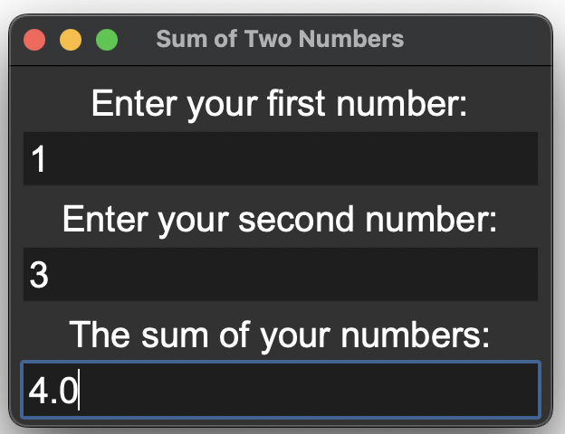
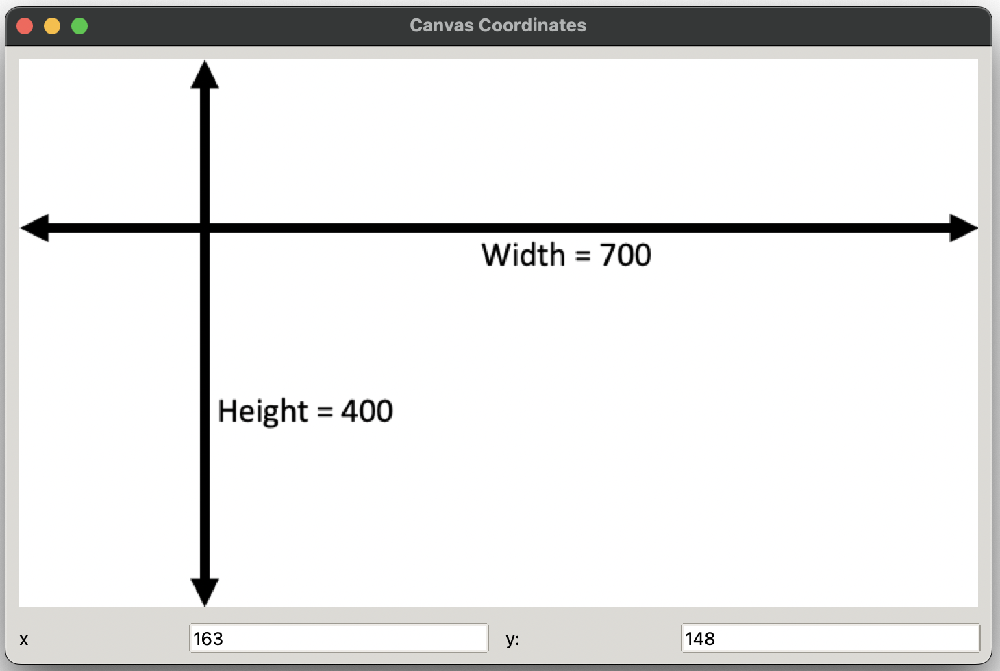

Binding Actions to Widgets#
Author: Mike Wood
Learning Objectives: By the end of this notebook, you should be able to:
Add widgets to a GUI using the grid framework
Bind functions to widgets so that they are interactive
Make widgets “sticky” to control the resizing of windows in a GUI
After adding widgets to your application, one of the next design steps is to give your widgets some functionality. For example, when you press a button, it should typically have some action associated with it. In this notebook, we’ll look at a few examples that bind user actions to widgets.
Binding Widgets to Functions#
The feet_to_meters.py script provides a simple GUI to convert feet to meters. The user enters a number in the Entry widget and then clicks Calculate. When the button is pressed, the unit conversion is calculated and updated in a separate Label widget.
# this is a GUI to convert feet to meters
# import the tkinter module
from tkinter import *
from tkinter import ttk
# create a FeetToMeters class
class FeetToMeters:
# define the init method of the class
def __init__(self, root):
# add a title to the window
root.title("Unit Conversion")
# add a main frame and add it to the window
mainframe = ttk.Frame(root)
mainframe.grid(column=0, row=0)
# define two string variables for feet and meters
self.feet = StringVar()
self.meters = StringVar()
# create an Entry widget that is bound to the feet string variable
# and add it to row 1 and column 2 of the main frame
feet_entry = ttk.Entry(mainframe, textvariable=self.feet)
feet_entry.grid(column=2, row=1)
# add Labels showing showing the text as organized in
# the format shown in the class handout
ttk.Label(mainframe,text="feet").grid(column=3, row=1)
ttk.Label(mainframe, text="is equivalent to").grid(column=1, row=2)
ttk.Label(mainframe, textvariable=self.meters).grid(column=2, row=2)
ttk.Label(mainframe, text="meters").grid(column=3, row=2)
# add a Button with the word "Calculate"
# bind the button to the calculate function
ttk.Button(mainframe, text="Calculate", command=self.calculate).grid(column=3, row=3)
# write a function called calculate
# get the feet variable and try converting to a float
# if it works, then convert the value to meters and assign
# to the meters string variable with 4 decimal places
# 1 foot = 0.3048 meters
# if it's not convertable to a float, do nothing
def calculate(self):
try:
value = float(self.feet.get())
self.meters.set('{:.2f}'.format(value*0.3048))
except ValueError:
pass
# create a root Tk object
root = Tk()
# create a FeetToMeters object with the Tk root object as an argument
FeetToMeters(root)
# call the mainloop method on the Tk root object
root.mainloop()
Binding Widgets to Keyboard Activity#
In this next example, we’ll take a look at binding actions on the keyboard to our widgets. We are often used to using the Return key on our key board in place of an action such as clicking on a button. Here, we’ll demo this binding to the keyboard in a simple GUI that adds two numbers. Let’s take a look at the script:
# a GUI to add two numbers
# import the tkinter package
from tkinter import *
from tkinter import ttk
# create a class called AddReturn
class AddReturn:
# add an init functions for this class
def __init__(self, root):
# Add a title to the window
root.title("Sum of Two Numbers")
# Define the geometry of the window
root.geometry("300x200")
# Configure the root so that it stretches in all directions
root.columnconfigure(0, weight=1)
root.rowconfigure(0, weight=1)
# Add a mainframe which is sticky in all directions
# Add some padding (e.g. 5 pixels) to the frame
mainframe = ttk.Frame(root, padding = "5 5 5 5")
mainframe.grid(column=0, row=0, sticky=(N, W, E, S))
# weight column to expand with the window
mainframe.columnconfigure(0, weight=1)
# Define three variables for the first number,
# the second number, and the sum of the two numbers
self.x = StringVar()
self.y = StringVar()
self.sum = StringVar()
# add a Label for the first number
label = Label(mainframe, text="Enter your first number:",
font=('Arial',20))
label.grid(row=0, column=0, sticky=(W,E))
# add an Entry for the first number
entry_1 = Entry(mainframe, textvariable=self.x,
font=('Arial',20))
entry_1.grid(row=1, column=0, sticky=(W,E), columnspan=2)
# bind the Return key to the first Entry box
entry_1.bind('<Return>', self.return_action)
# add a Label for the second number
label = Label(mainframe, text="Enter your second number:",
font=('Arial',20))
label.grid(row=2, column=0, sticky=(W,E))
# add an Entry for the second number
entry_2 = Entry(mainframe, textvariable=self.y,
font=('Arial',20))
entry_2.grid(row=3, column=0, sticky=(W,E))
# bind the Return key to the second Entry box
entry_2.bind('<Return>', self.return_action)
# add a Label for the sum of the numbers
label = Label(mainframe, text="The sum of your numbers:",
font=('Arial',20))
label.grid(row=4, column=0, sticky=(W,E))
# add an Entry for the sum of the numbers
entry_3 = Entry(mainframe, textvariable=self.sum,
font=('Arial',20))
entry_3.grid(row=5, column=0, sticky=(W,E))
# bind the Return key to the sum Entry box
entry_3.bind('<Return>', self.return_action)
# define a return_action function that can be called
# when a given event occurs
# function should try to add the two numbers
# if they can't be added (e.g. because one is not a float)
# then return NaN
def return_action(self, event):
try:
x_plus_y = str(float(self.x.get())+float(self.y.get()))
self.sum.set(x_plus_y)
except:
self.sum.set('NaN')
# create a root Tk object
root = Tk()
# create an AddReturn object with the Tk root object as an argument
AddReturn(root)
# call the mainloop method on the Tk root object
root.mainloop()
The above script generates a GUI that looks as follows:
Let’s summarize some of the new features in this GUI that we haven’t seen in the previous examples.
First, we see that this code has a line for the geometry of the window:
root.geometry("300x200")
as you can probably guess, this sets the shape of the initial window in pixels. The window can still be resized from this shape.
Next, wee see that each of the Entry widgets has been bound to <Return>, e.g.:
entry_1.bind('<Return>', self.return_action)
This command gives the widget functionality to respond to the Return key when the user is “in” one of the Entry widgets. We can also see that the binding is linked to a function called return_action. Just like in the previous example, this function is designed to access values in the class instance variables using the get method, and then change the value in another instance variable using the set method. The functions can be seen above.
This is one particular example for the Return key, but bindings can be made for any single key or combinations of keys. If you’re familiar with “hot key” commands (e.g. CTRL-C for copying) then you could imagine how this functionality could be implemented in your own GUIs.
Binding Widgets to Cursor Activity#
In this final example, we’ll take a look at how we can get the location that a user “clicks” on the screen. Let’s have a look:
# a GUI to return the coordinates of an image
# based on the location of the mouse click
# import the tkinter package
from tkinter import *
from tkinter import ttk
# create a class called CanvasCoords
class CanvasCoords:
# define an init function
def __init__(self, root):
# add a title to the window
root.title("Canvas Coordinates")
# change the style
style = ttk.Style(root)
style.theme_use('clam')
# make a frame and stick it to the sides
mainframe = ttk.Frame(root, padding = "3 3 3 3")
mainframe.grid(column=0, row=0, sticky=(N, W, E, S))
root.columnconfigure(0, weight=1)
root.rowconfigure(0, weight=1)
# make variables to store the x and y variables
self.x = StringVar()
self.y = StringVar()
# create an image using a PhotoImage object
self.img = PhotoImage(file='Canvas_Image.png')
# add a label and set the image to the photo image object
self.image_label = ttk.Label(mainframe, image=self.img)
self.image_label.image = self.img
# add the Label with the image to the GUI
self.image_label.grid(column=1, row=2, sticky=(W, E), columnspan=4)
# bind the primary click button of the mouse click
self.image_label.bind("<Button-1>", self.mouse_function)
# make a Label for the x variable
ttk.Label(mainframe, text='x').grid(column=1, row=4, sticky=(W, E))
# make an Entry widget for the x variable
self.x_entry = ttk.Entry(mainframe, width=12, textvariable=self.x)
self.x_entry.grid(column=2, row=4, sticky = (W, E))
# make a Label for the y variable
ttk.Label(mainframe, text='y:').grid(column=3, row=4, sticky=(W, E))
# make an Entry widget for the y variable
self.y_entry = ttk.Entry(mainframe, width=12, textvariable=self.y)
self.y_entry.grid(column=4, row=4, sticky=(W, E))
# add some padding to each of the widgets
for child in mainframe.winfo_children():
child.grid_configure(padx=5, pady=5)
# create a mouse function
def mouse_function(self, event):
# store the x and y coords of the event to variables
x = event.x
y = event.y
# replace the the Entry widget texts with
# the new values of x and y
self.x_entry.delete(0, END)
self.x_entry.insert(0, x)
self.y_entry.delete(0, END)
self.y_entry.insert(0, y)
# replace the variables with the x and y variables
self.x.set(x)
self.y.set(y)
# create a root Tk object
root = Tk()
# create a HeyThere object with the Tk root object as an argument
CanvasCoords(root)
# call the mainloop method on the Tk root object
root.mainloop()
The above script creates a widget that looks as follows:
Let’s summarize the new components of this scripts.
The first new feature is a PhotoImage object which was used as follows:
self.img = PhotoImage(file='Canvas_Image.png')
This creates an image object with the image in the file Canvas_Image.png. This is then added as a Label in the main Frame with:
self.image_label = ttk.Label(mainframe, image=self.img)
self.image_label.image = self.img
Note that the second line is key for showing the image.
The second new feature is in the mouse_click function which has been bound to the image_label. In this function, we see that the event, which has been passed into the mouse_click function as an argument, has attributes for x and y.
x = event.x
y = event.y
Note that these coordinates are measured from the top of the screen.
Finally, these coordinates are used to update the Entry widgets by deleting their old contents and replacing them with new contents:
self.x_entry.delete(0, END)
self.x_entry.insert(0, x)
self.y_entry.delete(0, END)
self.y_entry.insert(0, y)